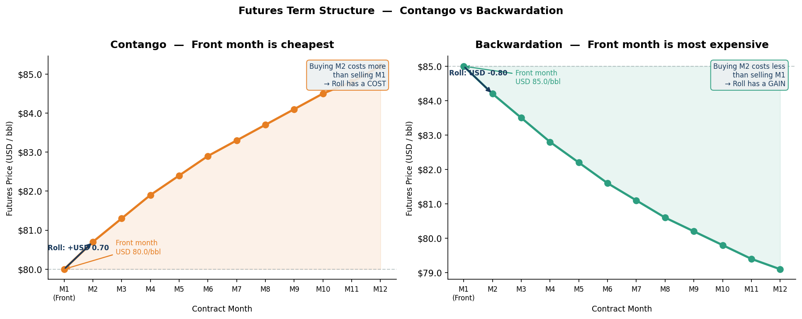
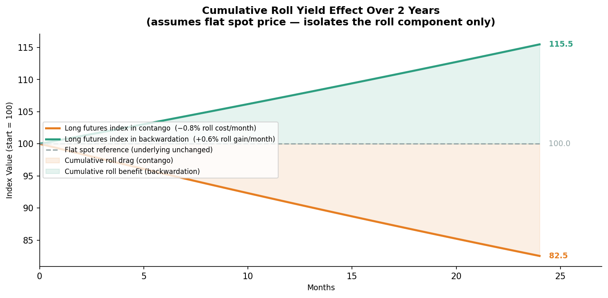
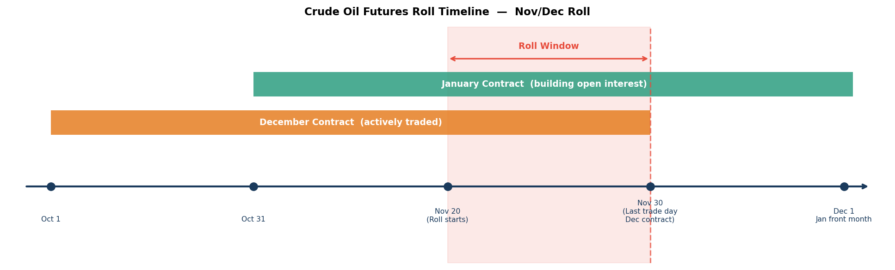
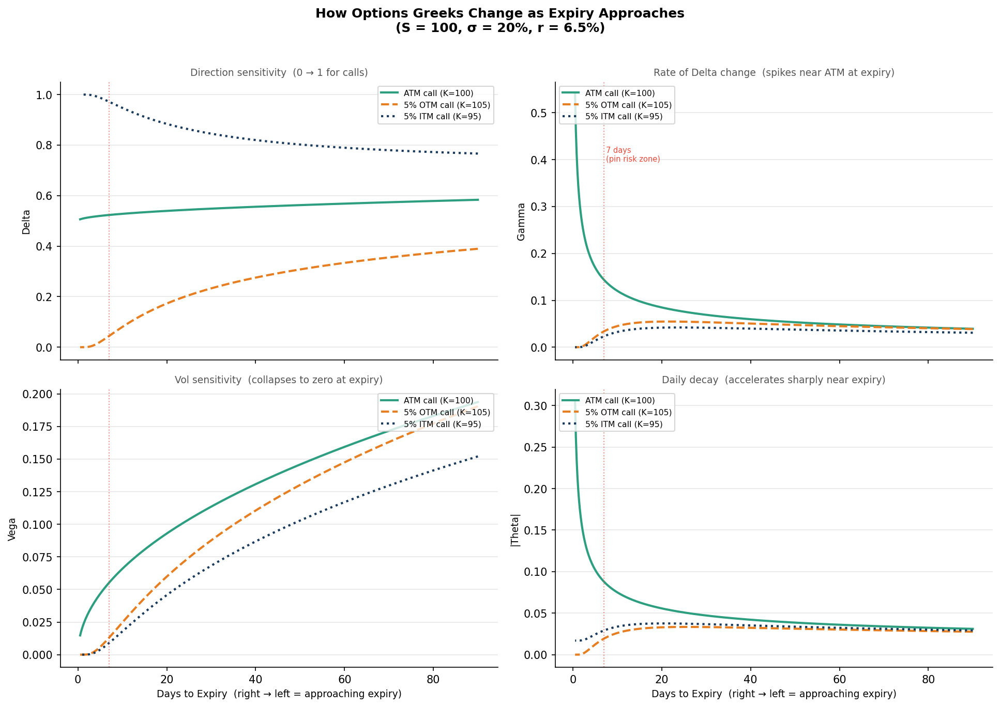
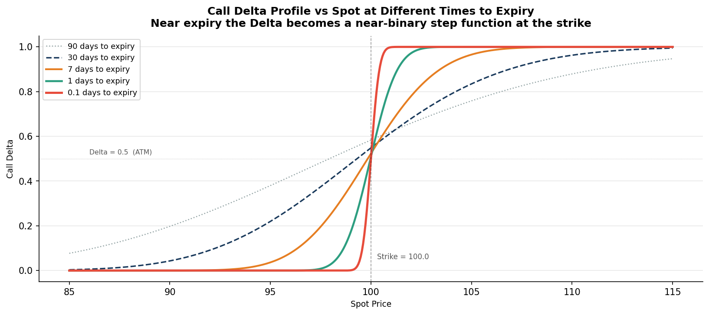
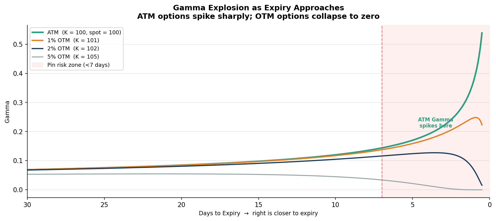

Every futures contract has an expiry date. That sounds obvious, but the full implication takes a while to internalise: if you want to maintain exposure to crude oil, natural gas, or copper indefinitely, you're not just holding a position — you're constantly closing one contract and opening the next. This process is called the roll, and understanding it changes how you think about both commodity investing and the behaviour of derivatives as expiry approaches.
I monitor this on a live derivatives book every day at Morgan Stanley. The shape of the futures curve, where the roll dates fall, how Gamma is behaving as expiry approaches — these aren't academic questions when you're responsible for reporting risk on a book that holds positions across multiple expiry months. This post is an attempt to explain what's actually happening, with the visuals I wish I'd had when I first started.
Why futures contracts expire
A futures contract is an agreement to buy or sell a specified quantity of a commodity at a specified price on a specified future date. The contract has a delivery month — December WTI crude oil, for instance, represents an obligation to deliver (or take delivery of) 1,000 barrels of West Texas Intermediate crude in December at the agreed price.
Most financial market participants — funds, banks, risk management desks — have no intention of taking or making physical delivery of 1,000 barrels of crude. They're using the futures market to gain price exposure, hedge existing positions, or express a market view. So before the contract reaches its last trading day, they close their position and simultaneously open the equivalent position in the next expiry month. This is the roll.
The term structure: contango and backwardation
At any point in time, futures contracts exist for multiple delivery months simultaneously. The curve of prices across those months is the futures term structure. Its shape matters enormously because it determines the cost or benefit of rolling.

Left: contango — each successive month trades higher than the last. Right: backwardation — the curve slopes downward. The arrows show the roll: closing the front month and opening the next.
Contango means the futures curve slopes upward — later delivery months are priced higher than the front month. This is typical when physical supply is adequate and storage costs dominate (you pay more to lock in delivery later because someone has to store the commodity in the meantime). It's the normal state for oil in non-crisis periods, and consistently for natural gas outside winter peaks.
Backwardation means the curve slopes downward — spot and near-term futures are priced higher than deferred months. This usually signals tight physical supply: the market is willing to pay a premium to get the commodity now. Oil went into sharp backwardation during the 2022 energy shock. LME copper goes into backwardation during supply squeezes from major mining disruptions.
The shape of the curve doesn't just describe the market — it directly determines the economics of maintaining a long futures position over time.
The roll cost: why contango is a headwind
When you roll a long futures position in contango, you sell the expiring front-month contract (at the lower price) and buy the next month (at the higher price). You're selling cheap and buying expensive, every single month. In backwardation it reverses: you sell the expensive front month and buy the cheaper next month, giving you a positive roll yield.
This is one of the most underappreciated dynamics in commodity investing. Index funds and ETFs that track commodity prices — oil ETFs, commodity index funds — suffer from this roll drag in contango markets. The underlying oil price can be flat or even rising while the fund loses value, because the roll is constantly eating into returns.

The cumulative effect of rolling at a cost of −0.8%/month (contango, orange) vs gaining +0.6%/month (backwardation, teal) on a flat underlying. Over two years, the difference is substantial — and the spot price didn't move at all in this illustration.
This is why commodity traders and risk managers always look at the term structure before taking a position. A simple long oil bet through a front-month futures roll in deep contango is a structurally losing carry trade even if your directional view on oil prices is correct.
When the roll happens: roll dates in practice
Roll dates vary by commodity. The key events on a futures contract's timeline:
- First Notice Day — for physically delivered contracts, this is when sellers can first notify the exchange of intent to deliver. Long holders who don't want physical delivery must have rolled before this date.
- Last Trading Day — the final day to trade the expiring contract. After this, positions held open are settled by delivery or cash.
- Roll window — the period, typically 5–15 days before last trading day, when most market participants execute the roll. Volume migrates from the front month to the next month during this window, visible in the open interest shift.

The November/December roll for crude oil. The December contract trades actively from October. The roll window (shaded red) opens about 10 days before the December contract's last trading day. Open interest visibly shifts from December to January during this window.
In practice, each commodity has its own rhythm. WTI crude oil expires around the 20th of the month prior to delivery. NYMEX natural gas expires two or three business days before the first day of the delivery month. LME (London Metal Exchange) metals work differently — they trade on a rolling 3-month forward basis rather than monthly contracts, so the "roll" is effectively daily. Agricultural futures follow crop calendar logic — wheat, corn, and soy have five or six standard expiry months aligned with harvest and shipping seasons.
Knowing the roll calendar for your instruments is non-negotiable in risk management. A position that looks manageable in terms of daily P&L can become disruptive around roll dates if the basis between the two contract months moves unexpectedly.
What happens to the Greeks as expiry approaches
Now the second half of this post. Whether you're managing commodity options or equity options, the behaviour of the Greeks changes dramatically as the contract approaches its expiry date. Understanding this is essential to managing a live book — the risk characteristics you monitored three months out are fundamentally different from what you face in the final week.
The chart below shows all four main Greeks for an ATM call, a slightly OTM call, and a slightly ITM call, as time to expiry decreases from 90 days to half a day. Read from right to left — the right side of each chart is far from expiry, the left side is close to expiry.

Delta, Gamma, Vega, and Theta for ATM, 5% OTM, and 5% ITM calls as time to expiry decreases (x-axis reads right to left — closer to expiry is to the left). The red dashed line at 7 days marks the pin risk zone.
Delta: from smooth curve to step function
Far from expiry, the Delta of an ATM call sits around 0.5 and varies smoothly across spot prices. As expiry approaches, the relationship becomes increasingly binary: above the strike, Delta approaches 1 (the option is almost certain to expire in the money); below the strike, Delta approaches 0 (almost certainly out of the money). At expiry, it's exactly a step function — 1 if spot > strike, 0 if spot < strike.

Call Delta vs spot price at 90, 30, 7, 1, and 0.1 days to expiry. At 90 days the curve is smooth and gradual. At 1 day it's nearly vertical at the strike. At 0.1 days it's essentially a binary: 0 or 1.
The practical implication: if spot is hovering near the strike in the final days before expiry, tiny price moves cause large Delta swings. A 10-point move in spot might flip the portfolio from Delta +500 to Delta +1,500 in seconds. This makes delta-hedging extremely expensive — you're constantly rebalancing as Delta lurches between values.
Gamma: the explosion near ATM
Gamma is the rate of change of Delta — how quickly Delta moves as spot moves. The Gamma explosion near expiry is one of the most dramatic features of options risk.

Gamma for ATM and OTM options as expiry approaches. The ATM option Gamma spikes sharply in the final days — it becomes the dominant Greek. OTM options show the opposite: Gamma collapses toward zero.
For the ATM option, Gamma increases without bound as T → 0. This means the option is becoming increasingly sensitive to tiny spot moves — the Delta is changing rapidly. For a long Gamma position, this sounds like a good thing (you benefit from moves in either direction), but you're also paying extreme Theta to hold it. For a short Gamma position (common in structured products and some strategies), this is dangerous: large, rapid Delta swings with no ability to hedge cost-effectively.
What's often overlooked: OTM options behave the opposite way near expiry. Their Gamma collapses toward zero because the probability of expiring in the money is approaching zero and that probability is becoming insensitive to small spot moves. The option is becoming "dead" — nearly all time value has gone, and it's simply going to expire worthless unless spot makes a large move.
This divergence — ATM Gamma exploding while OTM Gamma collapses — is what creates pin risk: if spot is exactly at or very near the strike at expiry, tiny moves flip the position between in-the-money and out-of-the-money. In practice on a live derivatives book, this means you watch the last few hours of trading very carefully if you hold options expiring that day near the money. I've seen desks actively reduce positions in the days leading up to expiry specifically to avoid this intraday volatility.
Vega: time value collapses at expiry
Vega — the sensitivity to implied volatility — falls monotonically as expiry approaches for all options. At expiry, Vega is exactly zero: the option has no remaining time value, so implied vol is irrelevant. The price is purely intrinsic (max(S − K, 0) for a call).
This means as you get close to expiry, vol moves stop mattering for that contract. A vol spike that would have significantly moved a 3-month option barely touches a 2-day option. This is actually useful information: if you're trying to manage vol exposure, you manage it through the longer-dated contracts, not through near-expiry positions.
The other implication: if you're long near-expiry options for their directional exposure (Delta), you're effectively paying zero Vega premium — there's no time value to lose to a vol collapse. That can be a clean way to have short-term directional exposure without the vol risk that comes with longer-dated options.
Theta: the acceleration effect
Theta (time decay) is the silent daily cost of holding options. The standard explanation is that options decay by Theta per day — but this understates the dynamics near expiry.
Theta is not constant. For ATM options, daily decay is slow far from expiry and accelerates sharply as the contract approaches its last trading day. An option that loses INR 20/day with 90 days remaining might lose INR 200/day with 2 days remaining. The decay is approximately proportional to 1/√T, which means it accelerates as T gets small.
In the Greeks chart above, the |Theta| subplot shows this acceleration clearly: the ATM option barely decays in absolute terms at 90 days but the decay rate spikes sharply in the final week. For OTM and ITM options, the picture is different — Theta can actually peak before expiry and then fall as the option approaches either zero or pure intrinsic value.
The trading implication: if you're selling options to collect Theta (a short volatility strategy), the daily carry accelerates as expiry approaches. But so does your Gamma exposure — the Gamma-Theta trade-off becomes extreme in the final days. Short Gamma near expiry means you face large Delta swings for every unit of Theta you're collecting. Many option sellers choose to close short positions before the final week specifically because this risk-reward shifts unfavourably.
What this means in practice
The two halves of this post connect. In commodity derivatives specifically:
- Roll timing and Greeks interact. If you hold short-dated options on a commodity future that is also approaching its delivery month, you're managing roll risk and expiry Greeks simultaneously. The position's Delta is becoming binary at the same time that the underlying futures price may be experiencing basis movements relative to the next month contract.
- Near-expiry positions require active monitoring. At Morgan Stanley, any position with fewer than 7 days to expiry that's near-the-money gets elevated monitoring — the daily risk summary highlights its Gamma explicitly because intraday P&L can swing significantly from small spot moves.
- The roll date creates a "step change" in risk. Once a futures position rolls to the next month, the option Greeks reset relative to the new front-month. An option that was ATM on the old front-month may be slightly OTM on the new contract because of the basis between the two delivery months. The risk profile changes overnight without any market move.
If you're building analytical tools that monitor derivatives positions, building in an explicit expiry flag — and treating near-expiry positions differently in your risk logic — is not optional. It's one of the first things a derivatives risk system needs to handle correctly. The Greeks calculated on day 90 are a fundamentally different instrument from the same strike and underlying with 3 days remaining.